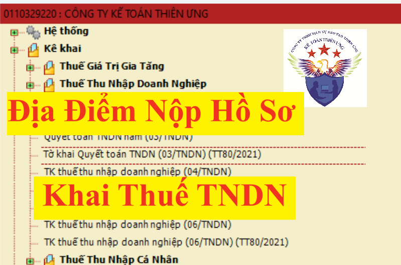

Quy định về địa điểm nộp hồ sơ kê khai thuế thu nhập doanh nghiệp theo Nghị định 126/2020/NĐ-CP hướng dẫn Luật Quản lý thuế
1) Người nộp thuế nộp hồ sơ khai thuế tại cơ quan thuế quản lý trực tiếp.
(Khoản 1 Điều 45 Luật Quản lý thuế)
2) Người nộp thuế có đơn vị phụ thuộc, địa điểm kinh doanh khác tỉnh, thành phố nơi có trụ sở chính có thu nhập được hưởng ưu đãi thuế thu nhập doanh nghiệp nộp hồ sơ khai thuế tại cơ quan thuế quản lý nơi có đơn vị phụ thuộc, địa điểm kinh doanh có thu nhập được hưởng ưu đãi thuế.
(Điểm h Khoản 1 Điều 11 Nghị định số 126/2020/NĐ-CP)
3) Đối với các tập đoàn kinh tế, các tổng công ty có đơn vị thành viên nếu đã hạch toán được doanh thu, chi phí, thu nhập chịu thuế thì đơn vị thành viên nộp hồ sơ khai thuế thu nhập doanh nghiệp tại cơ quan thuế quản lý trực tiếp đơn vị thành viên.
(Khoản 4 Điều 17 Thông tư số 80/2021/TT-BTC)
4) Trường hợp đơn vị thành viên có hoạt động kinh doanh khác với hoạt động kinh doanh chung của tập đoàn, tổng công ty và hạch toán riêng được thu nhập từ hoạt động kinh doanh khác đó thì đơn vị thành viên nộp hồ sơ khai thuế thu nhập doanh nghiệp tại cơ quan thuế quản lý trực tiếp đơn vị thành viên.
(Khoản 5 Điều 17 Thông tư số 80/2021/TT-BTC)
5) Người nộp thuế thu nhập doanh nghiệp tính thuế theo phương pháp tỷ lệ % trên doanh thu bán hàng hóa dịch vụ theo quy định của pháp luật về thuế thu nhập doanh nghiệp có phát sinh thu nhập từ hoạt động chuyển nhượng bất động sản, thuế thu nhập doanh nghiệp từ hoạt động bán toàn bộ Công ty TNHH một thành viên do tổ chức làm chủ sở hữu dưới hình thức chuyển nhượng vốn có gắn với bất động sản nộp hồ sơ khai thuế thu nhập doanh nghiệp tại cơ quan thuế nơi có bất động sản được chuyển nhượng.
(Điểm a Khoản 6 Điều 11 Nghị định số 126/2020/NĐ-CP)
6) Tổ chức, cá nhân nhận chuyển nhượng vốn từ nhà thầu nước ngoài; Tổ chức thành lập theo pháp luật Việt Nam nơi nhà thầu nước ngoài đầu tư vốn khai thay nếu tổ chức, cá nhân nhận chuyển nhượng vốn cũng là nhà thầu nước ngoài nộp hồ sơ khai thuế thu nhập doanh nghiệp tại cơ quan thuế quản lý trực tiếp doanh nghiệp nơi nhà thầu nước ngoài đầu tư vốn.

(Điểm c Khoản 6 Điều 11 Nghị định số 126/2020/NĐ-CP)
7) Người nộp thuế hạch toán tập trung tại trụ sở chính nhưng có đơn vị phụ thuộc, địa điểm kinh doanh tại đơn vị hành chính cấp tỉnh khác nơi có trụ sở chính thì người nộp thuế nộp hồ sơ khai thuế cho cơ quan thuế quản lý trực tiếp trụ sở chính và tính thuế, phân bổ nghĩa vụ thuế phải nộp theo từng địa phương nơi được hưởng nguồn thu ngân sách nhà nước theo quy định tại Khoản 2 Điều 11 Nghị định số 126/2020/NĐ-CP và Điều 17 Thông tư số 80/2021/TT-BTC như sau:
7.1) Đối với hoạt động kinh doanh xổ số điện toán:
Người nộp thuế không phải nộp hồ sơ khai thuế quý nhưng phải xác định số thuế tạm nộp hàng quý theo quy định tại điểm b khoản 6 Điều 8 Nghị định số 126/2020/NĐ-CP để nộp tiền thuế thu nhập doanh nghiệp vào ngân sách nhà nước cho từng tỉnh nơi có hoạt động kinh doanh xổ số điện toán.
Người nộp thuế khai quyết toán thuế thu nhập doanh nghiệp đối với toàn bộ hoạt động kinh doanh xổ số điện toán theo mẫu số 03/TNDN, nộp phụ lục bảng phân bổ số thuế thu nhập doanh nghiệp phải nộp cho các địa phương nơi được hưởng nguồn thu đối với hoạt động kinh doanh xổ số điện toán theo mẫu số 03-8C/TNDN cho cơ quan thuế quản lý trực tiếp; nộp số tiền thuế phân bổ cho từng tỉnh nơi có hoạt động kinh doanh xổ số điện toán.
Số thuế thu nhập doanh nghiệp phải nộp cho từng tỉnh nơi có hoạt động kinh doanh xổ số điện toán bằng (=) số thuế thu nhập doanh nghiệp phải nộp của hoạt động kinh doanh xổ số điện toán nhân (x) với tỷ lệ (%) doanh thu bán vé thực tế từ hoạt động kinh doanh xổ số điện toán tại từng tỉnh trên tổng doanh thu bán vé thực tế của người nộp thuế. Doanh thu bán vé thực tế từ hoạt động kinh doanh xổ số điện toán được xác định theo quy định tại điểm a khoản 2 Điều 13 Thông tư số 80/2021/TT-BTC.
Trường hợp số thuế đã tạm nộp theo quý nhỏ hơn số thuế phải nộp phân bổ cho từng tỉnh theo quyết toán thuế thì người nộp thuế phải nộp số thuế còn thiếu cho từng tỉnh. Trường hợp số thuế đã tạm nộp theo quý lớn hơn số thuế phải nộp phân bổ cho từng tỉnh thì được xác định là số thuế nộp thừa và xử lý theo quy định tại Điều 60 Luật Quản lý thuế và Điều 25 Thông tư số 80/2021/TT-BTC.
(Điểm a Khoản 1, Điểm a Khoản 2 và Điểm a Khoản 3 Điều 17 Thông tư số 80/2021/TT-BTC)
7.2) Đối với hoạt động chuyển nhượng bất động sản:
Người nộp thuế không phải nộp hồ sơ khai thuế quý nhưng phải xác định số thuế tạm nộp hàng quý theo quy định tại Điểm b Khoản 2 Điều 17 Thông tư số 80/2021/TT-BTC để nộp tiền thuế thu nhập doanh nghiệp vào ngân sách nhà nước cho từng tỉnh nơi có hoạt động chuyển nhượng bất động sản.
Người nộp thuế khai quyết toán thuế thu nhập doanh nghiệp đối với toàn bộ hoạt động chuyển nhượng bất động sản theo mẫu số 03/TNDN, xác định số thuế thu nhập doanh nghiệp phải nộp cho từng tỉnh tại phụ lục bảng phân bổ số thuế thu nhập doanh nghiệp phải nộp cho các địa phương nơi được hưởng nguồn thu đối với hoạt động chuyển nhượng bất động theo mẫu số 03-8A/TNDN cho cơ quan thuế quản lý trực tiếp; nộp tiền vào ngân sách nhà nước cho từng tỉnh nơi có hoạt động chuyển nhượng bất động sản.
Số thuế thu nhập doanh nghiệp phải nộp cho từng tỉnh nơi có hoạt động chuyển nhượng bất động sản tạm nộp hàng quý và quyết toán bằng (=) doanh thu tính thuế thu nhập doanh nghiệp của hoạt động chuyển nhượng bất động sản tại từng tỉnh nhân (x) với 1%.
Số thuế đã tạm nộp trong năm tại các tỉnh (không bao gồm số thuế đã tạm nộp cho doanh thu thực hiện dự án đầu tư cơ sở hạ tầng, nhà để chuyển nhượng hoặc cho thuê mua, có thu tiền ứng trước của khách hàng theo tiến độ mà doanh thu này chưa được tính vào doanh thu tính thuế thu nhập doanh nghiệp trong năm) được trừ vào với số thuế thu nhập doanh nghiệp phải nộp từ hoạt động chuyển nhượng bất động sản của từng tỉnh trên mẫu số 03-8A/TNDN, nếu chưa trừ hết thì tiếp tục trừ vào số thuế thu nhập doanh nghiệp phải nộp từ hoạt động chuyển nhượng bất động sản theo quyết toán tại trụ sở chính trên mẫu số 03/TNDN.
Trường hợp số thuế đã tạm nộp theo quý nhỏ hơn số thuế phải nộp theo quyết toán thuế trên tờ khai quyết toán tại trụ sở chính trên mẫu số 03/TNDN thì người nộp thuế phải nộp số thuế còn thiếu cho địa phương nơi đóng trụ sở chính. Trường hợp số thuế đã tạm nộp theo quý lớn hơn số thuế phải nộp theo quyết toán thuế thì được xác định là số thuế nộp thừa và xử lý theo quy định tại Điều 60 Luật Quản lý thuế và Điều 25 Thông tư số 80/2021/TT-BTC.
(Điểm b Khoản 1, Điểm b Khoản 2, Điểm b Khoản 3 Điều 17 Thông tư số 80/2021/TT-BTC)
7.3) Đối với đơn vị phụ thuộc, địa điểm kinh doanh là cơ sở sản xuất:
Người nộp thuế không phải nộp hồ sơ khai thuế quý nhưng phải xác định số thuế tạm nộp hàng quý theo quy định tại điểm b khoản 6 Điều 8 Nghị định số 126/2020/NĐ-CP để nộp tiền thuế thu nhập doanh nghiệp tại từng tỉnh nơi có cơ sở sản xuất, bao gồm cả nơi có đơn vị được hưởng ưu đãi thuế thu nhập doanh nghiệp.
Người nộp thuế khai quyết toán thuế thu nhập doanh nghiệp đối với toàn bộ hoạt động sản xuất, kinh doanh theo mẫu số 03/TNDN, nộp phụ lục bảng phân bổ số thuế thu nhập doanh nghiệp phải nộp cho các địa phương nơi được hưởng nguồn thu đối với cơ sở sản xuất theo mẫu số 03-8/TNDN cho cơ quan thuế quản lý trực tiếp; nộp số tiền thuế phân bổ cho từng tỉnh nơi có cơ sở sản xuất.
Riêng hoạt động được hưởng ưu đãi thuế thu nhập doanh nghiệp thì người nộp thuế khai quyết toán thuế theo mẫu số 03/TNDN tại cơ quan thuế quản lý trực tiếp, xác định số thuế thu nhập doanh nghiệp phải nộp của hoạt động được hưởng ưu đãi thuế thu nhập doanh nghiệp theo mẫu số 03-3A/TNDN, 03-3B/TNDN, 03-3C/TNDN, 03-3D/TNDN và nộp tại cơ quan thuế nơi có đơn vị được hưởng ưu đãi khác tỉnh và cơ quan thuế quản lý trực tiếp.
Số thuế thu nhập doanh nghiệp phải nộp tại từng tỉnh nơi có cơ sở sản xuất bằng (=) số thuế thu nhập doanh nghiệp phải nộp của hoạt động sản xuất, kinh doanh nhân (x) với tỷ lệ (%) chi phí của từng cơ sở sản xuất trên tổng chi phí của người nộp thuế (không bao gồm chi phí của hoạt động được hưởng ưu đãi thuế thu nhập doanh nghiệp). Chi phí để xác định tỷ lệ phân bổ là chi phí thực tế phát sinh của kỳ tính thuế.
Số thuế thu nhập doanh nghiệp phải nộp của hoạt động sản xuất, kinh doanh không bao gồm số thuế thu nhập doanh nghiệp phải nộp cho hoạt động được hưởng ưu đãi thuế thu nhập doanh nghiệp. Số thuế thu nhập doanh nghiệp phải nộp của hoạt động được hưởng ưu đãi được xác định theo kết quả sản xuất kinh doanh của hoạt động được hưởng ưu đãi và mức ưu đãi được hưởng.
Trường hợp số thuế đã tạm nộp theo quý nhỏ hơn số thuế phải nộp phân bổ cho từng tỉnh theo quyết toán thuế thì người nộp thuế phải nộp số thuế còn thiếu cho từng tỉnh. Trường hợp số thuế đã tạm nộp theo quý lớn hơn số thuế phân bổ cho từng tỉnh thì được xác định là số thuế nộp thừa và xử lý theo quy định tại Điều 60 Luật Quản lý thuế và Điều 25 Thông tư số 80/2021/TT-BTC.
(Điểm c Khoản 1, Điểm c Khoản 2 và Điểm c Khoản 3 Điều 17 Thông tư số 80/2021/TT-BTC)
7.4) Đối với nhà máy thủy điện nằm trên nhiều tỉnh:
Người nộp thuế không phải nộp hồ sơ khai thuế quý nhưng phải xác định số thuế phải tạm nộp hàng quý theo quy định tại điểm b khoản 6 Điều 8 Nghị định số 126/2020/NĐ-CP để nộp tiền thuế thu nhập doanh nghiệp vào ngân sách nhà nước cho từng tỉnh nơi có nhà máy thủy điện.
Người nộp thuế khai quyết toán thuế thu nhập doanh nghiệp đối với toàn bộ hoạt động sản xuất, kinh doanh theo mẫu số 03/TNDN, nộp phụ lục bảng phân bổ số thuế thu nhập doanh nghiệp phải nộp cho các địa phương nơi được hưởng nguồn thu đối với hoạt động sản xuất thủy điện theo mẫu số 03-8/TNDN và mẫu số 03-8B/TNDN cho cơ quan thuế quản lý trực tiếp; nộp số tiền phân bổ cho từng tỉnh nơi có nhà máy thuỷ điện.
Số thuế thu nhập doanh nghiệp phải nộp của nhà máy thuỷ điện bằng (=) số thuế thu nhập doanh nghiệp phải nộp của hoạt động sản xuất, kinh doanh nhân (x) với tỷ lệ (%) chi phí của từng nhà máy thuỷ điện trên tổng chi phí của người nộp thuế (không bao gồm chi phí của hoạt động được hưởng ưu đãi thuế thu nhập doanh nghiệp). Chi phí để xác định tỷ lệ phân bổ là chi phí thực tế phát sinh của kỳ tính thuế. Số thuế thu nhập doanh nghiệp phải nộp của hoạt động sản xuất, kinh doanh không bao gồm số thuế thu nhập doanh nghiệp phải nộp cho hoạt động được hưởng ưu đãi thuế thu nhập doanh nghiệp.
Sau khi xác định số thuế thu nhập doanh nghiệp phải nộp của nhà máy thuỷ điện, số thuế thu nhập doanh nghiệp phải nộp cho từng tỉnh bằng (=) số thuế thu nhập doanh nghiệp phải nộp của nhà máy thủy điện nhân (x) với tỷ lệ (%) giá trị đầu tư của phần nhà máy thủy điện nằm trên địa giới hành chính từng tỉnh trên tổng giá trị đầu tư của nhà máy thủy điện.
Trường hợp số thuế đã tạm nộp theo quý nhỏ hơn số thuế phải nộp phân bổ cho từng tỉnh theo quyết toán thuế thì người nộp thuế phải nộp số thuế còn thiếu cho từng tỉnh. Trường hợp số thuế đã tạm nộp theo quý lớn hơn số thuế phân bổ cho từng tỉnh thì được xác định là số thuế nộp thừa và xử lý theo quy định tại Điều 60 Luật Quản lý thuế và Điều 25 Thông tư số 80/2021/TT-BTC.
(Điểm d Khoản 1, Điểm d Khoản 2 và Điểm d Khoản 3 Điều 17 Thông tư số 80/2021/TT-BTC)
Kế Toán Diệu Tâm mời các bạn tham khảo thêm:
Kế Toán Diệu Tâm mời các bạn tham khảo thêm: